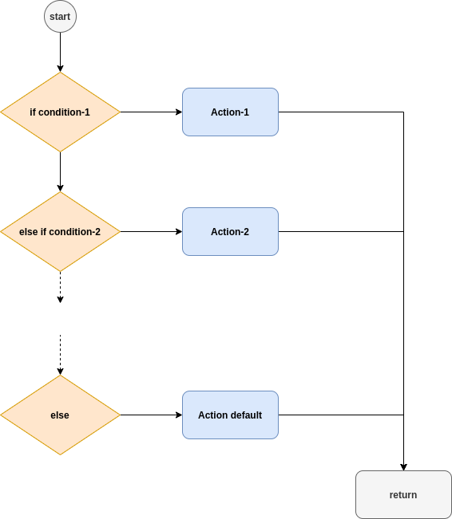

Serial I/O, Conditionals, Functions, Loops¶
Serial I/O¶
Todo
Focus on: Character read/write via Serial monitor. How to write fancy serial print.
#include <Servo.h>
int serialVal;
Servo myServo;
void setup() {
Serial.begin(9600);
myServo.attach(9);
}
void loop() {
if(Serial.available() > 0)
{
serialVal = Serial.read() - 48;
serialVal = map(serialVal, 0, 5, 0, 180);
Serial.println(serialVal);
myServo.write(serialVal);
}
delay(10);
}
Conditionals¶
Conditionals are used in order to carry out some actions under some circumstances. In other words, you use conditionals if you want to do things in some conditions and do some other things for some other conditions.
Let’s do a bit of brain storming before implementing the conditionals: You want to turn on an LED if your system stays stays vertical. If your sytem is tilted, then you want to turn off the LED. Can you help me to draw the flow chart?
Practical example: Tilt Sensor (if..else)
In some cases, having too many if…else statements one another looks unpleasant. A more compact looking of your code is mode fruitful. Then, switch..case concept enters the game.

Let’s do a bit more brain storming for switch..case: You want to make a program that asks to the user what s/he wants to do with an LED. If the user presses 1, turn on an LED. If they press 2, turn off LED. Also, in case they forget which number was on/off; if they press 3, there will be a help section. Can you help me to draw the flow chart?
Practical example: Switch-case example
See also
Very nice exercises about conditionals here.
Some additions on conditionals¶
Todo
Talk about why choosing if…else wisely is important.


Functions¶
Functions are used to organize the actions performed by your sketch into functional blocks. Functions package functionality into well-defined inputs (information given to a function) and outputs (information provided by a function) that make it easier to structure, maintain, and reuse your code. You are already familiar with the two functions that are in every Arduino sketch: setup and loop. You create a function by declaring its return type (the information it provides), its name, and any optional parameters (values that the function will receive when it is called). 2
Note
The terms functions and methods are used to refer to well-defined blocks of code that can be called as a single entity by other parts of a program. The C language refers to these as functions. Object-oriented languages such as C++ that expose functionality through classes tend to use the term method. Arduino uses a mix of styles (the example sketches tend to use C-like style, libraries tend to be written to expose C++ class methods). We will use, the term function is usually used unless the code is exposed through a class. Don’t worry; if that distinction is not clear to you, treat both terms as the same.
A parameter is sometimes referred to as an argument in some documentation. For practical purposes, you can treat these terms as meaning the same thing. I may use them both in various places.
No input no output¶
const int ledPin = 2;
void setup() {
Serial.begin(9600);
pinMode(ledPin, OUTPUT);
}
void loop() {
my_func_on();
delay(500);
my_func_off();
delay(500);
}
void my_func_on(){
digitalWrite(ledPin, HIGH);
}
void my_func_off(){
digitalWrite(ledPin, LOW);
}
Note: change integer value in function and observe that it doesn’t change if it is defined as local.
No output but with input¶
bool: c/c++
boolean: Arduino
const int ledPin = 2;
bool ledState = false;
void setup() {
Serial.begin(9600);
pinMode(ledPin, OUTPUT);
}
void loop() {
my_func(ledState);
ledState = !ledState;
delay(500);
}
void my_func(bool state){
digitalWrite(ledPin, state);
}
void my_nosense_func(int a){
a = 5;
}
Integer return¶
We will only learn how to return a single variable from a function. You can return several values but it is a bit more advanced topic. We need to get into details of arrays and pointers.
int my_meaningful_func(int a){
a = 5;
return a;
}
..seealso:
If there is time, ask students to do a tilt detection should return boolean.
See also
ANOUNCE ONLY IF ANY EXPERIENCED PROGRAMMER IN THE CLASS!!
Experienced programmers will note that both functions could be blink because the compiler will differentiate them by the type of values used for the parameter. This behavior is called function overloading.
See also
If you wonder how to return multiple arguments from a function, follow this link.
Footnotes
- 1
For wery high power applications a simple current limiting reisitor is not suitable, and you should instead use power electronics.
- 2
Arduino Cookbook by Michael Margolis Chapter 2.
Loops¶
Todo
Don’t forget to start with introducing ARRAYs.
Todo
Provide syntax for: FOR, WHILE, DO…WHILE
const int redPin = 3;
const int greenPin = 5;
const int bluePin = 6;
int redVal = 0;
void setup() {
Serial.begin(9600);
pinMode(redPin, OUTPUT);
pinMode(greenPin, OUTPUT);
pinMode(bluePin, OUTPUT);
}
void loop() {
// int potVal = analogRead(A0);
// Serial.println(potVal);
// int pwmVal = map(potVal, 0, 1023, 0, 255);
for(redVal=0; redVal<256; redVal++)
{
analogWrite(redPin, redVal);
analogWrite(greenPin, 0);
analogWrite(bluePin, 0);
delay(2);
}
delay(10);
}